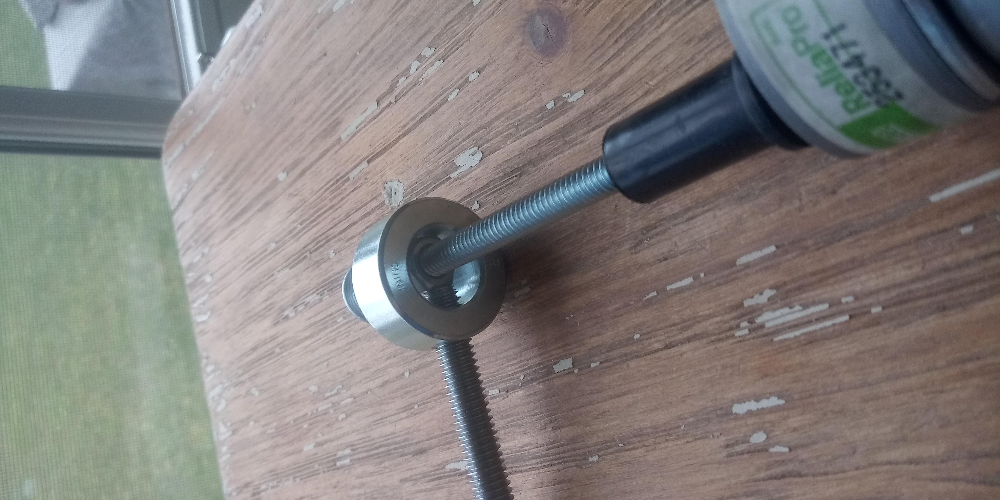

This week, I focused on getting a more precise model in my drawings and Fusion 360, so that I would be able to 3D print some parts and have them mailed in time. I had to finally figure out the horizontal moving mechanism that I had glossed over in earlier iterations, as well as how to actually put all of my pieces together.
I also updated the Fusion file to make it a little more realistic, but it still doesn't have either of the motors on it.
I then started sketching out the 3D printed pieces, since those needed to be designed asap!
I also went on a trip to the hardware store, and got a couple pieces in order to make the horizontal motion mechanism. The motion is essentially driven by the movement of a nut on a screw as the screw turns. Essentially, it begins with a 3/8" carriage bolt which will rest in the roller, but in a way that the roller can rotate independently from the carriage bolt. The carriage bolt is then screwed into a shaft set collar, with ID = 5/8", OD = 1-1/8", and width = 9/16". Then, a 1/4" hex nut is fixed into the collar by screwing the carriage bolt tight, and a 1/4" carriage bolt is screwed into that hex nut. Finally, a screw expander is screwed onto the end of the 1/4" carriage bolt and on the other end, the motot is attached by fixing a cotter pin through the the rubber and the hole in the motor shaft. This way, rotation of the motor will drive horizontal motion of the roller.
This mechanism is paralleled on both sides, so I wanted to use identical motors to try to make the calibration as easy as possible. This meant that I had to use the DC geared motor I planned to use to drive the rollers earlier on, and decided to use a stepper for that instead, on Rob's suggestion.
Now it was time to figure out the exact measurements of the gear mechanism. Now that I had switched to the stepper motor, I didn't need to have the gears on the side that drove the fixed motor, since the stepper's speed is already pretty low and could generate enough torque (hopefully) without the conversion. I worked on hooking up the stepper motor driver (since when I tried using the h-bridge, things went weird and the stepper would randomly stall and start just vibrating without rotating. I'm not sure it was the fault of the h-bridge, but I thought I might as well use the proper board.)
I worked mainly off of the example here (on Rob's page), but I had to change the code a bit to make it do what I wanted it to do. The main thing to figure out was how to do speed control in the way I wanted it.
/*
Stepper program. Input pins for direction and step. Steps when step-pin goes high.
Make sure that the incoming digital signal is < 3.5 volts to protect ATSAM chip.
*/
int Aplus = 15;
int Aminus = 14;
int Bplus = 8;
int Bminus = 5;
int led1_pin = 2;
int led2_pin = 4;
int step_pin = 30; //pin 3 of the 2x2 header
int dir_pin = 31; //pin 4 of the 2x2 header
uint16_t step_count = 0;
void setup() {
Serial.begin(0); //the USB serial, for monitoring the step number.
pinMode(Aplus, OUTPUT);
pinMode(Aminus, OUTPUT);
pinMode(Bplus, OUTPUT);
pinMode(Bminus, OUTPUT);
pinMode(step_pin, INPUT_PULLDOWN);
pinMode(dir_pin, INPUT_PULLDOWN);
pinMode(led1_pin, OUTPUT);
pinMode(led2_pin, OUTPUT);
//
//Following are the functions that energize the coils for driving. They are executed in positive or negative sequence
//
}
void pulse_0(){
digitalWrite(Aplus,HIGH);
digitalWrite(Bplus,HIGH);
}
void pulse_1(){
digitalWrite(Aminus,HIGH);
digitalWrite(Bplus,HIGH);
}
void pulse_2(){
digitalWrite(Aminus,HIGH);
digitalWrite(Bminus,HIGH);
}
void pulse_3(){
digitalWrite(Aplus,HIGH);
digitalWrite(Bminus,HIGH);
}
void all_off() {
digitalWrite(Aplus,LOW);
digitalWrite(Aminus,LOW);
digitalWrite(Bplus,LOW);
digitalWrite(Bminus,LOW);
}
void loop() {
while(!digitalRead(step_pin)){ //wait for step pin to go high.
;}
digitalWrite(led1_pin,HIGH);
all_off(); //turn off coils before sending new step.
if (digitalRead(dir_pin)){ //check direction.
digitalWrite(led2_pin,HIGH);
step_count --;
}
else{
step_count ++;
digitalWrite(led2_pin,LOW);
}
step_count = step_count%4;
Serial.println(step_count);
if (step_count == 0) pulse_0();
if (step_count == 1) pulse_1();
if (step_count == 2) pulse_2();
if (step_count == 3) pulse_3();
delay(2);
digitalWrite(led1_pin,LOW);
}
/*
Stepper program to control stepper board with digital IO control. Ouput pins: step_comm makes motor step on rise.
dir_comm determines motor direction. Make sure these signals are , ~3.5 V for ATSAM motor driver boards.
*/
int step_comm = 33; //pin 3 of the 2x2 header
int dir_comm = 15; //pin 4 of the 2x2 header
uint16_t step_count = 0;
boolean dir = false;
void setup() {
Serial.begin(0); //the USB serial, for monitoring the step number.
pinMode(step_comm, OUTPUT);
pinMode(dir_comm, OUTPUT);
}
void loop() {
//dir = !(dir); //switch direction.
digitalWrite(dir_comm,dir);
digitalWrite(step_comm,HIGH);
delay(10);
//end i loop
} //end of loop function.
I realized that essentially the speed was controlled by the delay in the driver board code, and so I needed to have my board communicate an integer for the speed which would then get translated into a delay. I noticed that delays from 2s to 20s spanned the range of speeds that I wanted the stepper to go at (1s isn't enough, and 20s is very slow.) I decided to just use wire transmission, and this way I could even communicate bi-directionality and speed in the same byte, which made things a lot easier.